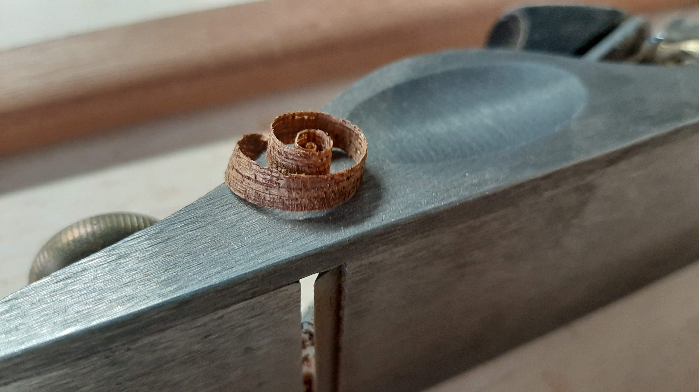
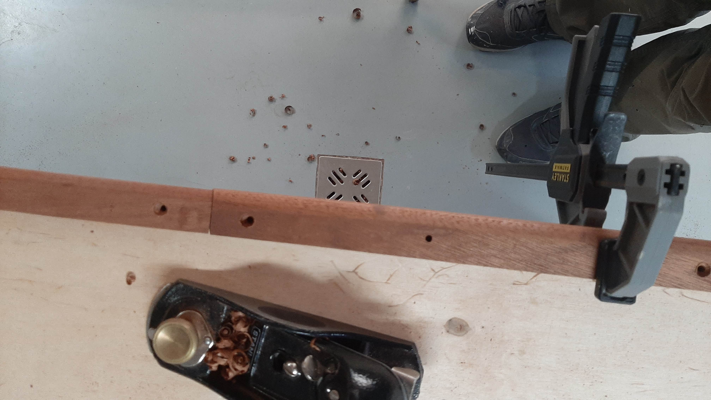
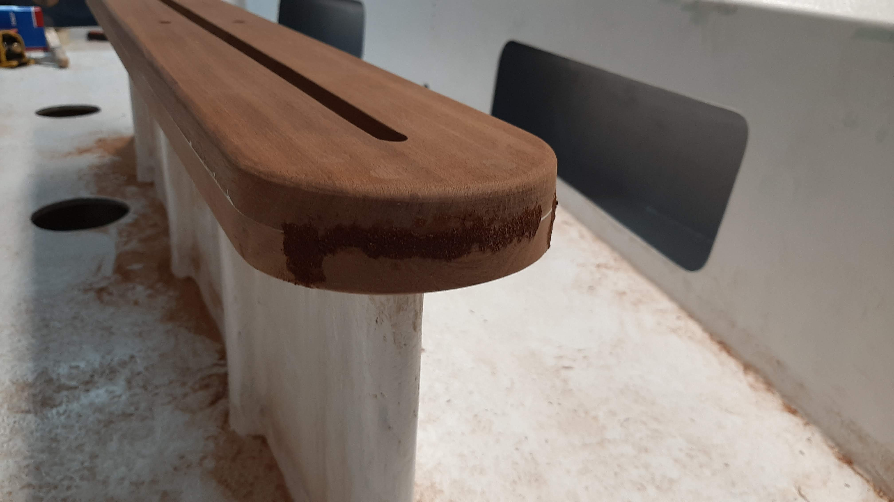
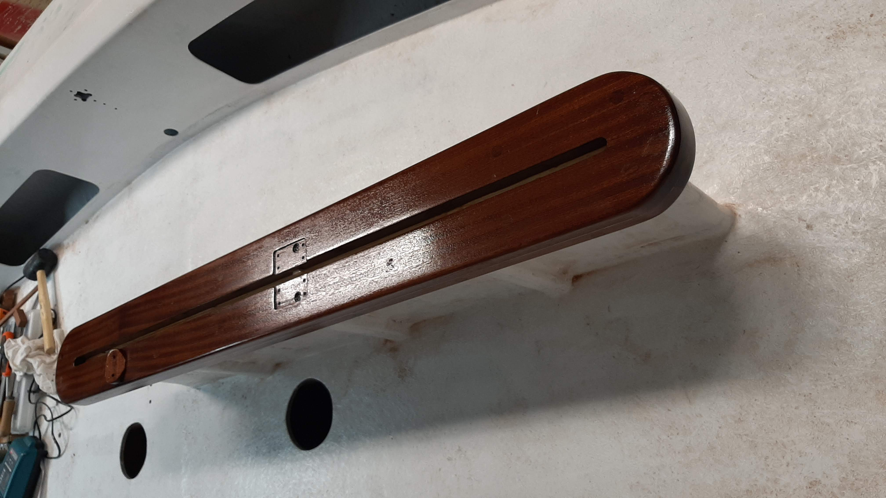
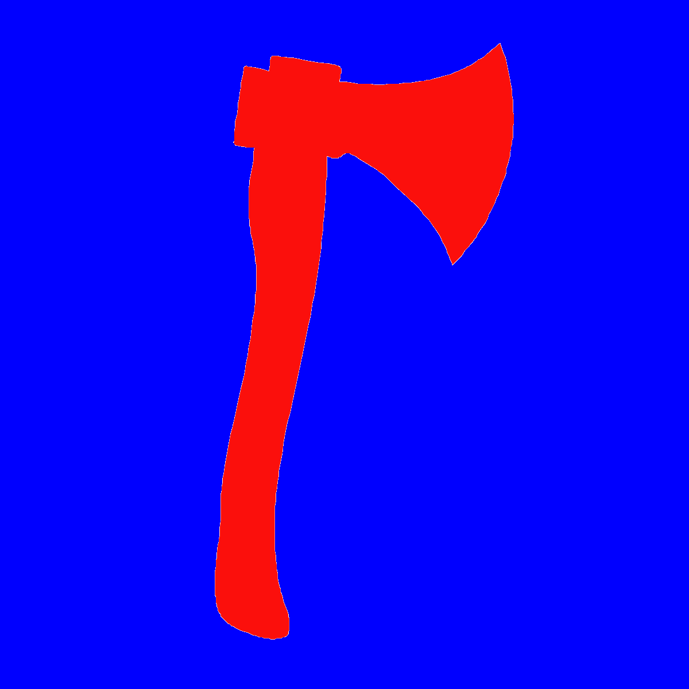

A felújítás során sok famunkát kellett végezni. Hullámtörő lécet, svertszekrény tetőt, dörzsléceket, lejtvágnit és kormányrudat kellett készíteni.
Minden faalkatrész mahagóniból készült:

Ha az ember elég ügyesen gyalul, ilyen szép csigákat készíthet mahagóniból.

Ezek a dörzslécek is mind egyedileg készültek, ezért sok időt és energiát kellet arra fordítani, hogy kettő léc találkozásánál a lehető legtökéletesebb legyen az illesztés. Ehhez természetesen 3-4-szer fel kellett tenni a hajóra őket majd levéve újra igazítani rajtuk egy keveset egészen addig amíg a lehető legjobb nem lett az illeszkedés.

Talán a svertszekrény tetejének újraépítése volt a legkomplexebb feladat az asztalosmunkák közül. Összesen 7 alkatrészből épül fel, illetve temérdek mahagóni dugóbol, amik eltakarják az összetaró csavarokat.

A lakkozás tesz igazán széppé minden faalkatrészt. Az első és az utolsó réteg felvitele a legélvezetesebb és a legszebb, mert az első kihozza a fa erezetét, az utolsó pedig megadja azt amiért egyáltalán lakkozza az ember a fát: a fényesség és vizzáróság.
